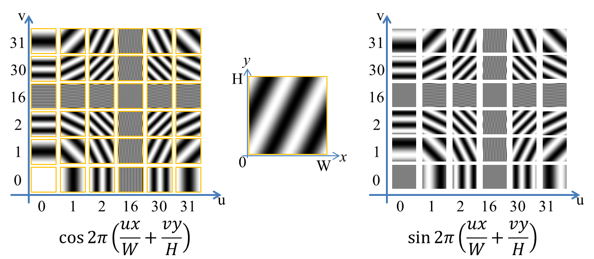

フーリエ変換(離散)
今まで必要が無くて勉強したことがなかったフーリエ変換について、ざっと勉強したのでまとめておく。
参考文献
- 金谷健一, これなら分かる応用数学教室―最小二乗法からウェーブレットまで
フーリエ変換(離散)
| 周期2πの関数 f(θ) を考える (任意の整数 k について f(θ) = f(θ+ 2πk) ) - この関数の基本周波数 w は w = 2π / T = 1 である． この周期的な関数の [0,2π]をN等分してリサンプリングし，その値をflとする． f(θ)のサンプル点が N 個で，サンプル点上のみの値が必要な場合， f(θ)は次の通り N 個の正弦波の線形結合で 表せる. 左式を離散逆フーリエ変換と呼び，右式を離散フーリエ変換と呼ぶ |
係数 Fk が，f(θ)に含まれる，k番目の正弦波
係数 Fk を，実部 Rk と 虚部 Ik に分解すると (
f(θ)が実数関数なら、上式の虚部はゼロになる．
実部に注目すると，Fk の実部 Rk が cos(2πkl/N) の係数で，虚部 Ik が sin(2πkl/N) の係数になっている．
定性的な意味を理解しておきたいのでもう少し詳しく見てみる．
1. 元の関数f(θ)は、周期2πの関数で、区間[0,2π]をN等分してサンプリング点を作った
2. この関数fを sin(2π0l/N), sin(2π1l/N), sin(2π2l/N)...，cos(2π0l/N), cos(2π1l/N), cos(2π2l/N)...
という2N個の関数の重ね合わせで表現した．
3. 重ね合わせ時の重み Fk = Rk + iIkは、前述のフーリエ変換の式で求まり、対応する cos(2πk), sin(2πk)の重みを表す．
1の原始N乗根を用いた表現
N乗して初めて1になる数を1の原始N乗根と呼ぶ 定義： wNを1の原始N乗根とすると, |
| 1の原始N乗根のひとつ |
離散フーリエ変換の実装
上の式を見れば明らかだが，離散の場合フーリエ係数 Fk を計算するのは非常に簡単で，和分を一回行えばよい．実部 :
/*-------------------------------------------------------------------------------------- フーリエ変換 (fl --> Fk = Rk + Ik ) int N : 配列サイズ const double fl : 元画像 (1D) const double Rk : フーリエ変換後の実部 cos( 2πkl / N) の係数 (already allocated) const double Ik : フーリエ変換後の虚部 sin(-2πkl / N) の係数 (already allocated) --------------------------------------------------------------------------------------*/ void t_fourieTrans1D( const int N, const double *fl, double *Rk, double *Ik ) { const double w0 = 2 * M_PI / (double)N; for( int k = 0; k < N; ++k) { Rk[k] = 0; Ik[k] = 0; for( int m = 0; m < N; ++m){ Rk[k] += fl[m] * cos( w0 * k * m ); Ik[k] += -fl[m] * sin( w0 * k * m ); } Rk[k] /= N; Ik[k] /= N; } }
逆フーリエ変換は...
実部 :
虚部 :
void t_inverseFourieTrans1D( const int N, double *fl, const double *Rk, const double *Ik ) { const double w0 = 2 * M_PI / (double)N; for( int m = 0; m < N; ++m)//lはわかりづらいのでm利用 { fl[m] = 0; //double fl_imagi=0; for( int k = 0; k < N; ++k) { fl[m] += Rk[k] * cos( w0 * k * m ) - Ik[k] * sin( w0 * k * m ); //fl_imagi += Rk[k] * sin( w0 * k * m ) + Ik[k] * cos( w0 * k * m ); } } }
2次元離散フーリエ変換
| 2次元関数(画像) fxy (x = 0,1,..W-1, y =0,1,...,H)の離散フーリエ変換は次の通り ただし u = 0,1,...,W-1, v = 0,1,...,H-1 |
これをそのまま実装したのが以下．
/*---------------------------------------------------------------------- const int W : 画像横サイズ const int H : 画像縦サイズ double *fxy : 元画像 double *Ruv : 変換後実部 double *Iuv : 変換後虚部 (配列はすべてallocate済み) fxy, Ruv, Iuvは1次元配列で実現 : fxy[x][y] = fxy[ x + y*W ] ----------------------------------------------------------------------*/ //フーリエ変換 2D (fxy --> Fuv = Ruv + Iuv ) void t_fourieTrans2D_1( const int W, const int H, const double *fxy, double *Ruv, double *Iuv) { const double wx0 = 2*M_PI / (double)W; const double wy0 = 2*M_PI / (double)H; for( int v = 0; v < H; ++v){ for( int u = 0; u < W; ++u) { const int uvIdx = u + W * v; Ruv[ uvIdx ] = 0; Iuv[ uvIdx ] = 0; for( int y = 0; y < H; ++y) for( int x = 0; x < W; ++x){ Ruv[ uvIdx ] += fxy[ x + y * W ] * cos( - wx0*x*u - wy0*y*v ); Iuv[ uvIdx ] += fxy[ x + y * W ] * sin( - wx0*x*u - wy0*y*v ); } Ruv[ uvIdx ] /= (W*H); Iuv[ uvIdx ] /= (W*H); } } } //逆フーリエ変換 2D ( Fuv = Ruv + Iuv --> fxy) void t_fourieTrans2D_invert_1( const int W, const int H, const double *Ruv, const double *Iuv, double *fxy ) { const double wx0 = 2*M_PI / (double)W; const double wy0 = 2*M_PI / (double)H; for( int y = 0; y < H; ++y) for( int x = 0; x < W; ++x) { int xyIdx = x + y * W; fxy[ xyIdx ] = 0; for( int v = 0; v < H; ++v) for( int u = 0; u < W; ++u) fxy[ xyIdx ] += Ruv[ u + W * v ] * cos( wx0*x*u + wy0*y*v ) - Iuv[ u + W * v ] * sin( wx0*x*u + wy0*y*v ); } }
結果が以下. 絶対値をとって可視化した、 |Fuv|, |Ruv|, |Iuv|．
2次元離散フーリエ変換の定量的な話
Fuv = Ruv + i Iuv と置いて、２次元離散逆フーリエ変換の実部を展開すると以下の通り (画像を扱ってるので虚部はゼロだよ)この式をよく見ると、画像fxyは，
+ 重み Ruv で cos 2π(ux/W + vy/H) を重ね合わせ、
+ 重み Iuv で sin 2π(ux/W + vy/H) を重ね合わせたもの
ということがわかる．
重ね合わせた関数, cos 2π(ux/W + vy/H), sin 2π(ux/W + vy/H) を基底関数と呼ぶ．
既定関数は、uとvに応じて形がいろいろと変わる．
W=H=32の既定関数をプロットしたのが以下．

ここで確認すべきは、
1, このたくさんのしましま画像を係数をかけて足すだけで元の複雑な絵が表現できる
2, uvが小さいとき低周波で大きいとき高周波になりそうなのに、
実際は四隅に低周波の波が集まり、真ん中あたり、u=W/2 v = H/2 に高周波が集まる
つまり、上の写真のフーリエ変換の結果を見ると、低周波成分が多いことがわかる．
四隅に低周波があって、真ん中付近に高周波があるのは若干扱いにくいので、
通常、下図のようにフーリエ変換の結果をタイリングして、中央部分を切りぬく処理を行う．
これで、中央部分に低周波成分の係数が並び、周囲に高周波成分が並ぶフーリエ変換の(よく見かける)可視化画像ができた ．
FFTの前に少しだけ高速化の話
上記のt_fourieTrans2D() と t_inverseFourieTrans2D は正直かなり遅い．各pixelについてW×H回の足し合わせをして, pixel数がW×Hなので計算時間は O(N2M2)かかる。
| 2次元のフーリエ変換をするときは、次のような式変形をする. Guyが、fxyを横方向(u方向)に1次元フーリエ変換を行ったもので、 Fuyは、Guyを縦方向(v方向)にフーリエ変換を行ったものになる。 2次元の逆フーリエ変換も同様に と式変形すると、まず、横方向にFuvを逆フーリエ変換してgvxを取得し これを縦方向に逆フーリエ変換すればよい事がわかる． |
こうすると計算時間は...
横方向にかかる時間 O(W2H) + 縦方向にかかる時間O(WH2) = O(W2H + WH2)
...になる
ちょっと色気を出して並列化までした実装が以下．(ちょっと長くなってしまいました)
/*---------------------------------------------------------------------- const int W : 画像横サイズ const int H : 画像縦サイズ double *fxy : 元画像 double *Ruv : 変換後実部 double *Iuv : 変換後虚部 (配列はすべてallocate済み) fxy, Ruv, Iuvは1次元配列で実現 : fxy[x][y] = fxy[ x + y*W ] ----------------------------------------------------------------------*/ //フーリエ変換2D fxy --> Ruv + i Iuv void t_fourieTrans2D_3( const int W, const int H, const double *fxy, double *Ruv, double *Iuv) { double *Guy_R = new double[W*H]; double *Guy_I = new double[W*H]; memset( Guy_R, 0, sizeof(double)*W*H); memset( Guy_I, 0, sizeof(double)*W*H); memset( Ruv , 0, sizeof(double)*W*H); memset( Iuv , 0, sizeof(double)*W*H); const double w0W = 2 * M_PI / (double)W; const double w0H = 2 * M_PI / (double)H; //横方向 fxy --> Guy_Re + i Guy_Im #pragma omp parallel for for( int y = 0; y < H; ++y ) { for( int u = 0; u < W; ++u) { const int uyIdx = u + y*W; for( int x = 0; x < W; ++x){ Guy_R[ uyIdx ] += fxy[x + y*W] * cos( w0W * x * u ); Guy_I[ uyIdx ] += -fxy[x + y*W] * sin( w0W * x * u ); } Guy_R[ uyIdx ] /= W; Guy_I[ uyIdx ] /= W; } } //縦方向 Guy_Re + i Guy_Im --> Ruv + Iuv; #pragma omp parallel for num_threads(threadNum) for( int u = 0; u < W; ++u) { for( int v = 0; v < H; ++v) { const int uvIdx = u + v*W; for( int y = 0; y < H; ++y) { double s = sin( -w0H * y * v ), c = cos( -w0H * y * v ); Ruv[ uvIdx ] += Guy_R[ u + y*W ] * c - Guy_I[ u + y*W ] * s; Iuv[ uvIdx ] += Guy_R[ u + y*W ] * s + Guy_I[ u + y*W ] * c; } Ruv[ uvIdx ] /= H; Iuv[ uvIdx ] /= H; } } delete[] Guy_R; delete[] Guy_I; } //逆フーリエ変換 void t_fourieTrans2D_invert_3( const int W, const int H, const double *Ruv, const double *Iuv, double *fxy) { double *gvx_r = new double[ W*H ]; double *gvx_i = new double[ W*H ]; memset( gvx_r, 0, sizeof(double)*W*H); memset( gvx_i, 0, sizeof(double)*W*H); memset( fxy , 0, sizeof(double)*W*H); const double w0W = 2 * M_PI / (double)W; const double w0H = 2 * M_PI / (double)H; //横方向 (u) Ruv + i Iuv --> gxv_r + i gxv_i #pragma omp parallel for num_threads(threadNum) for( int v = 0; v < H; ++v ) { for( int x = 0; x < W; ++x) { const int vxIdx = x + v*W; for( int u = 0; u < W; ++u){ const int uvIdx = u + v*W; double c = cos( w0W * x * u ), s = sin( w0W * x * u ) ; gvx_r[vxIdx] += Ruv[uvIdx] * c - Iuv[uvIdx] * s; gvx_i[vxIdx] += Ruv[uvIdx] * s + Iuv[uvIdx] * c; } } } //縦方向 gxv_r + i gxv_i --> fxy #pragma omp parallel for num_threads(threadNum) for( int x = 0; x < W; ++x ) { for( int y = 0; y < H; ++y) { const int xyIdx = x + y * W; for( int v = 0; v < H; ++v) { fxy[xyIdx] += gvx_r[ x+v*W ] * cos( w0H * y * v ) - gvx_i[ x+v*W ] * sin( w0H * y * v ); } } } delete[] gvx_r; delete[] gvx_i; }この実装のほうが上の実装 (t_fourieTrans2D_1(...), t_fourieTrans2D_invert_1(...)) に比べてだいぶ速い
todo 高速フーリエ変換, 畳み込み